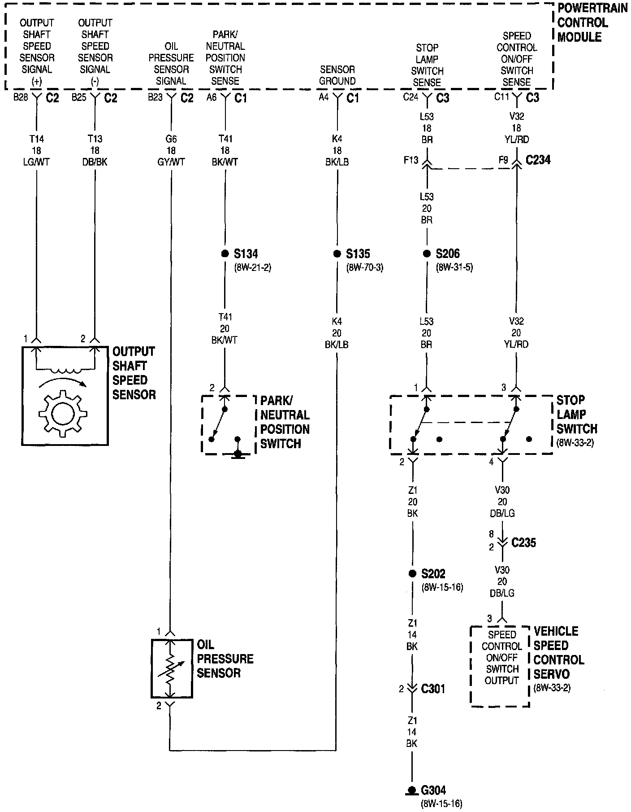

Operation CHARM
: Car repair manuals for everyone.
Русский
Home
>>
Jeep
>>
1997
>>
Grand Cherokee 4WD L6-4.0L VIN S
>>
Repair and Diagnosis
>>
Engine, Cooling and Exhaust
>>
Engine
>>
Sensors and Switches - Engine
>>
Oil Pressure Sender
>>
Diagrams
>>
Electrical Diagrams
>>
Powertrain Control Module Diagram
Powertrain Control Module Diagram
Fuel/Ignition Systems:
